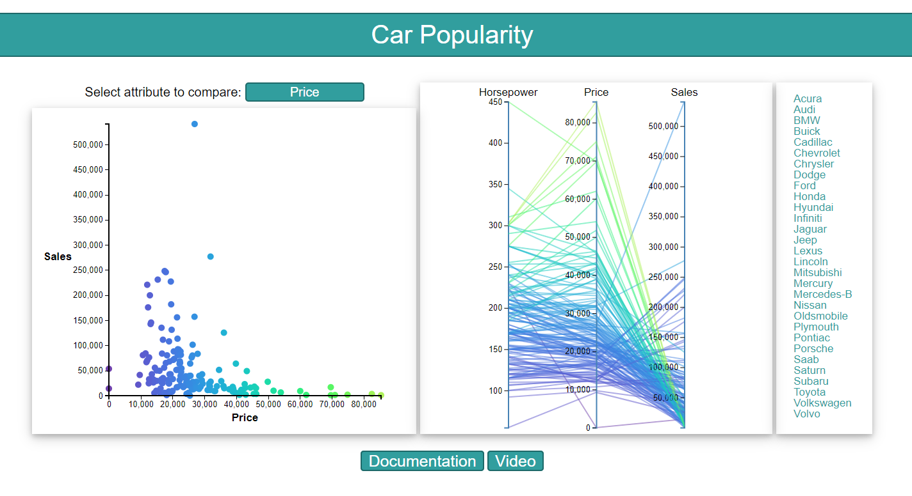
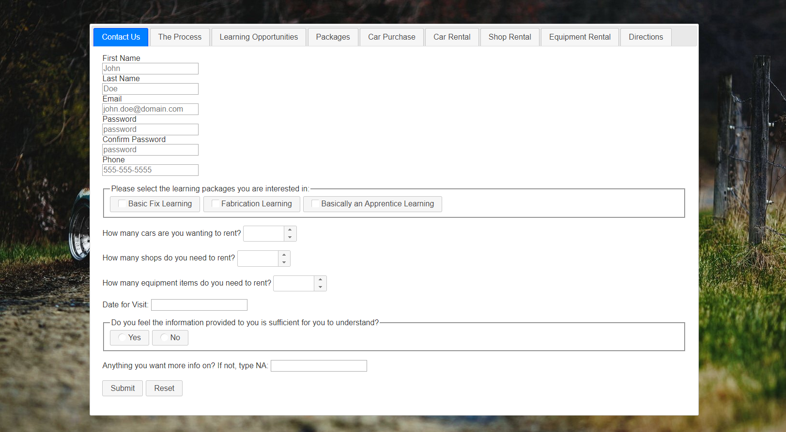

*Disclaimer*
|  |
D3.js
For this project, I was tasked with learning D3.js to reach several goals my teammates and I wanted to achieve.
Firstly, we wanted to get a sense of how any numeric attribute in our data set affected the sales of each car. With the scatter plot, the user can easily see the correlation between the attribute on the x-axis and sales. When utilizing the parallel chart to the right of the scatter plot, the user can also see the correlation between horsepower, the attribute on the x-axis, and sales at the same time. We also wanted the user to be able to choose the attribute on the x-axis. We felt this was important to the usability of the site itself, and a nice-to-have. As the user selects an attribute from the select menu, the scatter plot changes its x-axis to the selected attribute, and the middle attribute of the parallel chart also changes. Any more information about this project is in its documentation page. |
|
jQuery
This project served as the culmination of everything I had been learning with jQuery in this class. The overall object for this project was to create a form for a fake business using jQueryUI that would output the submitted data, provided there were no errors with any inputs.
The first goal for this project was to have jQueryUI essentially do the more difficult styling for you. I chose to utilize the tabs widget as the main "interface". After that, I utilized the datepicker, button, autocomplete, spinner, and checkboxradio widgets to style those particular parts of the form. Another essential part of this project was to utilize the jQueryUI Validator plugin. With the validation plugin, I could not only scrape the data, but I could also validate it for any errors. If any errors did arrise upon submitting the form, I could use the Validator plugin to display the correct error message in the correct location. |
 |